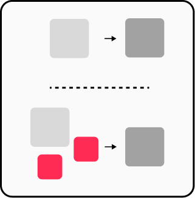
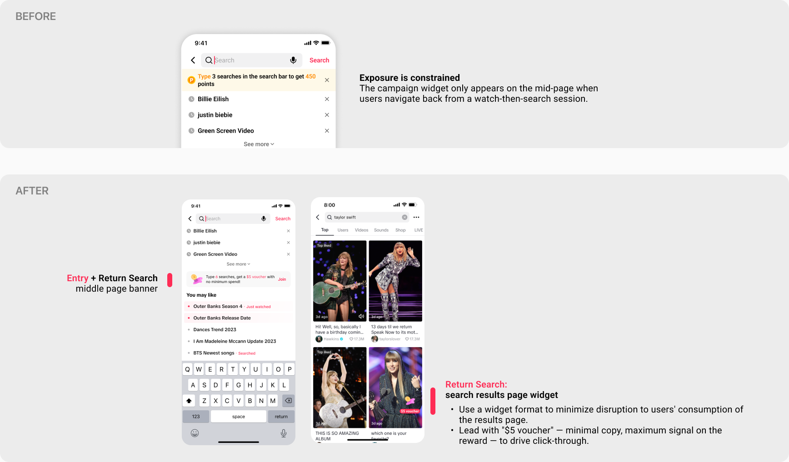
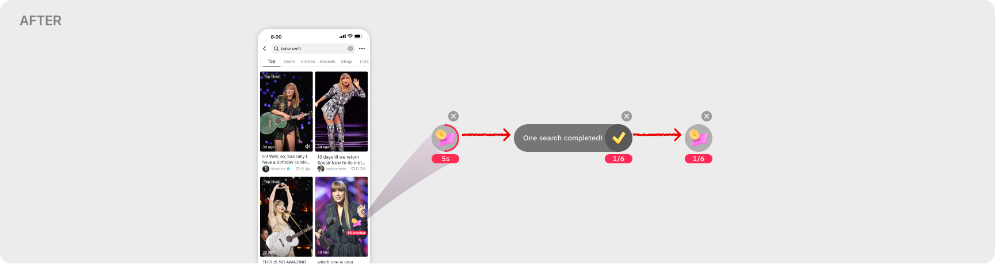
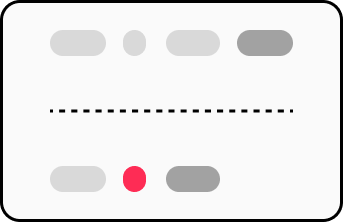
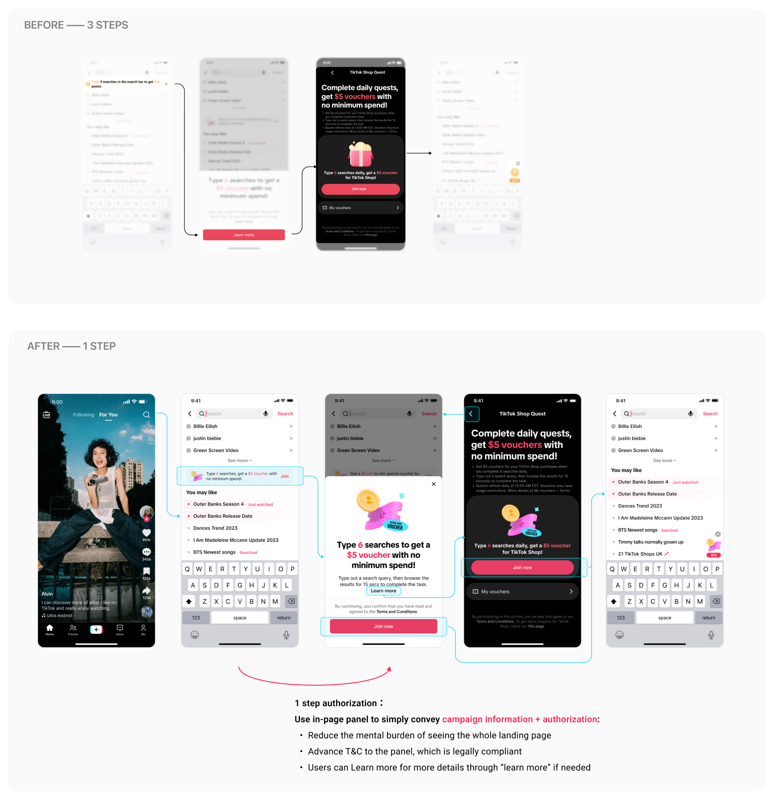

TikTok Search Incentive
TikTok's search incentive had already worked in Japan — but Phase 2 in the US had 70M eligible users and participation still near zero. The team's instinct was to redesign the banner. I pushed to map the full authorization funnel first.
Three decisions, 10 days: exposure 14% → 67%, authorization rate 49% → 60%.

Search incentives had already worked in Japan. The question was why the US rollout wasn't producing the same result.
In Japan, a search task incentive moved core metrics significantly — overall manual search up +4.2%, new search users up +9.3%, low-activity users up +14.3%.
Phase 1 in the US limited participation to existing TikTok Shop users: complete 6 daily searches to earn a $5 voucher. Q4 2024 results returned a paradox.
+8% PayU/DAU
The voucher drove real purchasing behavior among authorized users, exactly as designed.
~0 active search growth
9% auth rate among eligible users
The original goal — growing search behavior — was not being achieved.
Phase 2 was about to expand eligibility to all US users (~70M DAU) — but Phase 1 had shown near-zero participation.
Scaling the audience wouldn't fix what was already broken. What needed to change before we opened it up?
The hardest part wasn't technical — it was diagnostic. Was the problem weak incentives, wrong touchpoint placement, or users simply not motivated to search? Any of these could explain near-zero participation. With limited resources, a wrong call would cost an entire iteration cycle.
Only ~9% of eligible Phase 1 users authorized — this was a reach problem, not a conversion problem.
I framed the funnel as two independent events: exposure and authorization. Data confirmed exposure was the bigger lever — without fixing it, 86% of users would never see the campaign.


The campaign had a structural ceiling
The T&C pop-up only triggered when users returned to the search middle page after searching — missing everyone who entered fresh or stayed on the results page. 14% exposure rate, regardless of campaign quality.
Authorization required a detour
Users who saw the banner couldn't authorize directly — they had to navigate to a separate detail page. That context switch introduced hesitation. 49% dropped — not disinterest, but recoverable friction.
Two decisions, each mapped to a specific gap in the funnel.
Both are P0. D01 attacked exposure — expanding which users see the campaign and when. D02 attacked conversion — removing the steps between intent and authorization.
Not limited to the search middle page — add campaign exposure wherever users show search intent
Surface during active search and post-view search to increase perceived reach
Limit intrusiveness with widget interaction and frequency cap
Unified KV branding with restrained motion to reinforce campaign progress
Remove unnecessary intermediate pages and re-confirmations
Clearly state scope and reversibility (task-only / dismissible anytime)

Expand exposure reach — a new surface and a smarter trigger
86% of eligible users never saw the campaign. The middle-page banner wasn't underperforming — it was structurally limited. Two moves to fix this.
Trigger fix — show on entry, not just returnThe existing banner only fired when users navigated back from search — a logic constraint, not a product decision. Eligibility wasn't conditional on having searched before, so the trigger shouldn't be. Expanding to entry + return doubled exposure opportunities per session at near-zero engineering cost.
More exposure per session risks feeling intrusive — frequency cap (step back 3 days after X impressions with no clicks) is the minimum viable constraint.

New touchpoint — search results page widgetOptimizing within a surface reaching 14% of users would never move the aggregate metric. The results page captures users who have already searched — a larger, higher-intent audience. New touchpoint for ~25M passive search users without interrupting the search flow.


Consolidate authorization into the T&C bottom sheet — 3 steps to 1
Original flow: tap banner → navigate to detail page → tap "Join now." Three steps, breaking search context entirely.
Consolidate into the T&C bottom sheet: rewritten copy, inline T&C link, and a direct "Join now" button. Users authorize without leaving search. "Learn more" stays — but is no longer required.
Tap banner → navigate to detail page → tap "Join now"
Tap banner → bottom sheet (copy + T&C link + Join now) → authorized

Other P1 and P2 initiatives — copy rewrite, dismissal controls, and micro-animation — were also shipped as part of this project, but are not detailed here.
Targeting high-value e-commerce users wasn't an upside — it was more interruption.
I identified an additional exposure surface: a campaign banner at the top of e-commerce search results, mixed into the feed. E-commerce intent users are exactly the TikTok Shop voucher audience.
The proposal was rejected in cross-functional review.
These users already see the widget
The results page widget from D01 already reached this audience. A top banner added duplicate exposure without incremental reach — more noise, no new coverage.
Interrupting a high-intent shopping moment
Inserting a campaign into active purchase intent breaks the moment of highest conversion likelihood. The disruption cost likely outweighed the authorization upside.
Good product judgment isn't only knowing what to build — it's knowing when to kill a valid idea before it ships. Coverage gains that cannibalize high-intent moments aren't growth; they're noise that erodes long-term trust in the product.
Targets met. Exposure rate 14% → 67%. Authorization rate 49% → 60%.
Define the problem before scoping solutions
Breaking the brief into two separate metrics — exposure rate and authorization rate — clarified priorities, sequenced the roadmap, and prevented the team from over-engineering solutions for the wrong bottleneck.
The highest-leverage changes are often not features
The entry-trigger fix required no additional resources and doubled per-session exposure. Recognizing it as a logic gap — not a product gap — is the kind of judgment that unlocks headroom fast.
Scope control is also a PM responsibility
The rejected e-commerce banner was logically valid but created a net-negative trade-off. Bringing that argument to cross-functional review — and making the case to not ship — was as important as the decisions that did ship.